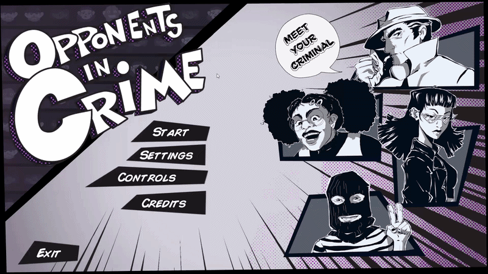

Opponents in Crime
Learning the truth about Unreal Engine.

Overview
Opponents In Crime is an online multiplayer party looter, where up to 4 players compete to see who can steal the most art from the museum in a short amount of time. Players need to focus not only on stealing stuff for themselves but also preventing their opponents from getting score.
Visit Itch.io page!Technical Breakdown
In this game project I again focused on UI. I worked together with a fellow designer to whip up something a bit more complex than your average video game main menu. We look at a lot of inspiration and found that Persona 5 had a cool menu system and we wanted to try to do something similar. While working on it however we noticed very quickly that it would be a lot of work for the two of us. We were both pretty new to working with UI and I was personally very new to Unreal Engine and Blueprints.
I had never worked in Unreal Engine before but I had always wanted to try it.

Stamina bar and tracking arrows
I decided to leave my comfort zone a little bit in the project as well by trying to do some UI work that required interaction with 3D objects. This was very difficult for me as what I needed to do was quite niche at least in the way we wanted it in our game. It is somewhat similar to a compass in games like Fortnite but instead we wanted it surrounding the player. To accomplish this I made sure all our arrow textures where in a square and placed in a specific way to make sure it rotated nicely.
For the stamina bar I placed a plane underneath the player that had a special material that I modified through blueprints to make it. It's on a delayed timer to fill up and that delay gets increased if the player were to use all of their stamina. It also has a state check to know when it needs to switch to red to help tell the player that they are running out of stamina. This was entirely inspired by the Zelda Breath of the Wild stamina bar.

What I Learned
From this project I learned that Unreal Engine is not what I first thought and that maybe I had been putting off trying it for a bad reason. I had been afraid that I couldn't possibly use it because I didn't know any C++ but with this project I learned that I don't really need to know that as most thing in Unreal can just be done with blueprints. Hell it's even preferred for most things!
After this project I also felt ready to move out of my comfort zone more often as I found the work on the stamina bar and tracker arrows to be some of the most fun work I'd done in a while. It felt so rewarding to see the fruits of my hard labor.